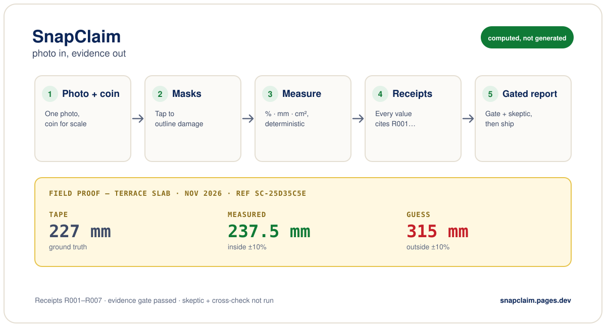
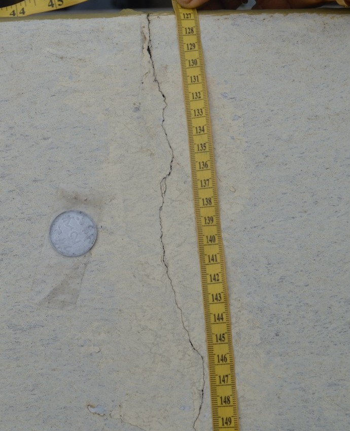
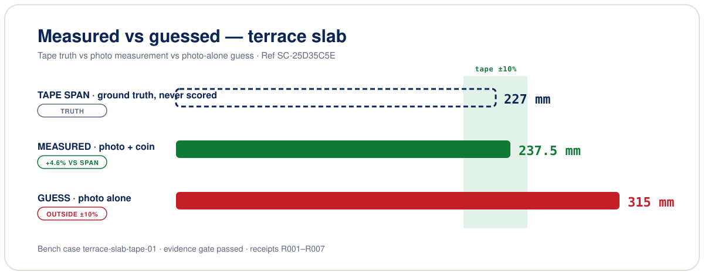
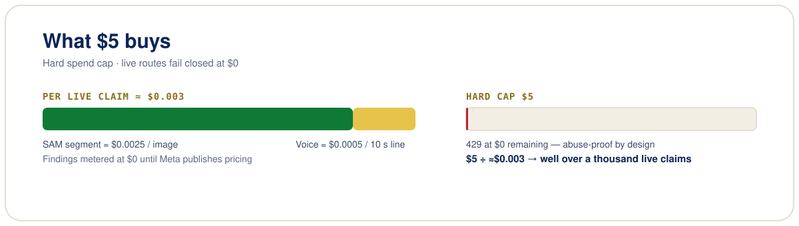

Computed, not generated
Every number has a receipt.
A photo plus one spoken line becomes a claim-ready report — % damaged, crack length and width, area in cm² — each backed by a machine-checkable receipt. The server refuses to ship any sentence whose numbers don't cite one.
Capture — a phone and a coin
Sample captures from the team's test set. Tap any photo to enlarge it. In the app, you tap the damage and the coin; on-device SlimSAM previews the masks before anything is sent.
Pipeline — masks to receipts to sentences
No LLM touches the numbers. Models write sentences; deterministic code does the arithmetic. The evidence gate ships a finding only if every number cites its receipt — otherwise HTTP 422 with named failures.

Field proof — terrace slab, ref SC-D8ECE64B

| Length | 232 mm [R005] — Confirmed |
|---|---|
| Width | 3.2 mm [R006] — Unverified, no width ground truth |
| Surface | 0.73% [R002] — Confirmed |
| Area | 7.48 cm² [R004] — Confirmed |
| Severity | significant [R007] — Confirmed |
Verification: evidence gate passed · skeptic verified · mask cross-check verified. Chart below shows the earlier run (span 227 mm, measured 237.5 mm with a user-supplied 25 mm coin, photo-alone guess 315 mm).

Cost — what the $5 cap buys
Live calls are metered on a hard per-isolate spend cap. The demo and CI run in mock mode at $0.
